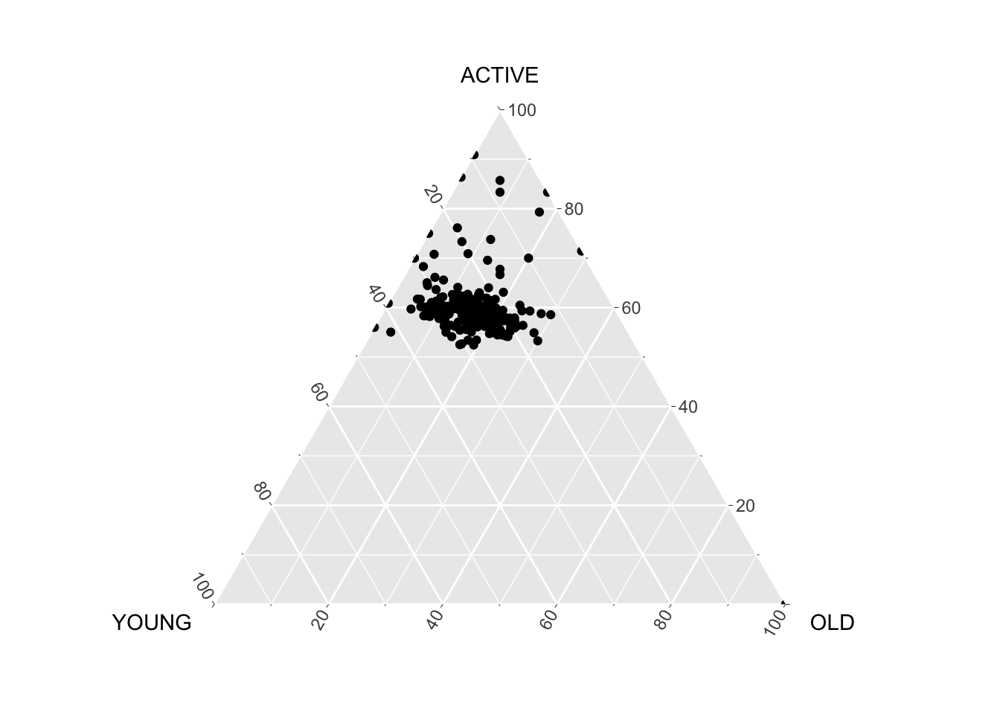
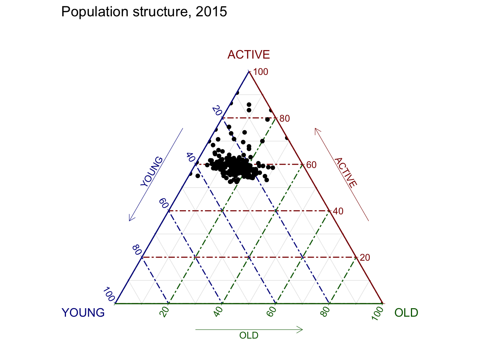

pacman::p_load(plotly, ggtern, tidyverse)Creating Ternary Plot with R
Overview
Ternary plots are a way of displaying the distribution and variability of three-part compositional data. (For example, the proportion of aged, economy active and young population or sand, silt, and clay in soil.) It’s display is a triangle with sides scaled from 0 to 1. Each side represents one of the three components. A point is plotted so that a line drawn perpendicular from the point to each leg of the triangle intersect at the component values of the point.
In this hands-on, you will learn how to build ternary plot programmatically using R for visualising and analysing population structure of Singapore.
The hands-on exercise consists of four steps:
- Install and launch tidyverse and ggtern packages.
- Derive three new measures using mutate() function of dplyr package.
- Build a static ternary plot using ggtern() function of ggtern package.
- Build an interactive ternary plot using plot-ly() function of Plotly R package.
Installing and launching R packages
For this exercise, two main R packages will be used in this hands-on exercise, they are:
- ggtern, a ggplot extension specially designed to plot ternary diagrams. The package will be used to plot static ternary plots.
- Plotly R, an R package for creating interactive web-based graphs via plotly’s JavaScript graphing library, plotly.js . The plotly R libary contains the ggplotly function, which will convert ggplot2 figures into a Plotly object.
We will also need to ensure that selected tidyverse family packages namely: readr, dplyr and tidyr are also installed and loaded.
In this exercise, version 3.2.1 of ggplot2 will be installed instead of the latest version of ggplot2. This is because the current version of ggtern package is not compatible to the latest version of ggplot2.
The code chunks below will accomplish the task.
Data Preparation
The data
For the purpose of this hands-on exercise, the Singapore Residents by Planning AreaSubzone, Age Group, Sex and Type of Dwelling, June 2000-2018 data will be used. The data set has been downloaded and included in the data sub-folder of the hands-on exercise folder. It is called respopagsex2000to2018_tidy.csv and is in csv file format.
Importing Data
To important respopagsex2000to2018_tidy.csv into R, read_csv() function of readr package will be used.
#Reading the data into R environment
pop_data <- read_csv("../data/respopagsex2000to2018_tidy.csv") Preparing the Data
Next, use the mutate() function of dplyr package to derive three new measures, namely: young, active, and old.
#Deriving the young, economy active and old measures
agpop_mutated <- pop_data %>%
mutate(`Year` = as.character(Year))%>%
spread(AG, Population) %>%
mutate(YOUNG = rowSums(.[4:8]))%>%
mutate(ACTIVE = rowSums(.[9:16])) %>%
mutate(OLD = rowSums(.[17:21])) %>%
mutate(TOTAL = rowSums(.[22:24])) %>%
filter(Year == 2018)%>%
filter(TOTAL > 0)Plotting Ternary Diagram with R
4.1 Plotting a static ternary diagram
Use ggtern() function of ggtern package to create a simple ternary plot.
#Building the static ternary plot
ggtern(data=agpop_mutated,aes(x=YOUNG,y=ACTIVE, z=OLD)) +
geom_point()
#Building the static ternary plot
ggtern(data=agpop_mutated, aes(x=YOUNG,y=ACTIVE, z=OLD)) +
geom_point() +
labs(title="Population structure, 2015") +
theme_rgbw()
Plotting an interative ternary diagram
The code below create an interactive ternary plot using plot_ly() function of Plotly R.
# reusable function for creating annotation object
label <- function(txt) {
list(
text = txt,
x = 0.1, y = 1,
ax = 0, ay = 0,
xref = "paper", yref = "paper",
align = "center",
font = list(family = "serif", size = 15, color = "white"),
bgcolor = "#b3b3b3", bordercolor = "black", borderwidth = 2
)
}
# reusable function for axis formatting
axis <- function(txt) {
list(
title = txt, tickformat = ".0%", tickfont = list(size = 10)
)
}
ternaryAxes <- list(
aaxis = axis("Young"),
baxis = axis("Active"),
caxis = axis("Old")
)
# Initiating a plotly visualization
plot_ly(
agpop_mutated,
a = ~YOUNG,
b = ~ACTIVE,
c = ~OLD,
color = I("black"),
type = "scatterternary"
) %>%
layout(
annotations = label("Ternary Markers"),
ternary = ternaryAxes
)References
Readings
Core Readings
Multivariate Methods
- An Introduction to Visual Multivariate Analysis
- Corrgrams: Exploratory Displays for Correlation Matrices
- Ternary Plot
- Multivariate Data Glyphs
- Parallel Coordinates
- Wikipedia: Heatmap
Treemaps
Optional Readings
Multivariate Methods
- The scatter-plot matrix: a great tool
- A Graphical Display of Large Correlation Matrices
- Ternary Diagram
- Reading a Ternary Diagram
- Multidimensional Detective
- Parallel Coordinates
- Multivariate Analysis Using Parallel Coordinates
- Ghosts on the Radar — Why Radar Charts Are Easily Misread
- Keep Radar Graphs Below the Radar - Far Below
- A Critique of Radar Charts
- Radar: More Evil Than Pie
Treemaps
- Treemaps
- Discovering Business Intelligence Using Treemap Visualization
- 10 Lessons in Treemap Design
- Bederson, Benjamin B.; Shneiderman, Ben; Wattenberg, Martin (2002). Ordered and quantum treemaps: Making effective use of 2D space to display hierarchies. ACM Transactions on Graphics. 21 (4): 833.
- Bruls, Mark; Huizing, Kees; van Wijk, Jarke J. (2000). Squarified treemaps. In de Leeuw, W.; van Liere, R. Data Visualization 2000: Proc. Joint Eurographics and IEEE TCVG Symp. on Visualization]
- US Economic Census Treemap
- TreeCovery: Coordinated dual treemap visualization for exploring the Recovery Act
- Juice’s Stimulus Bill Explorer
- Fundexplorer
- Map of the Market
- The HIVE Group
- Truck Sales Slip, Tripping Up Chrysler
- Newsmap
- Obama’s 2011 Budget Proposal: How It’s Spent
R Packages
Correlation Matrix
- ggscatmat and ggpairs of GGally.
- corrplot. A graphical display of a correlation matrix or general matrix. It also contains some algorithms to do matrix reordering. In addition, corrplot is good at details, including choosing color, text labels, color labels, layout, etc.
- corrgram calculates correlation of variables and displays the results graphically. Included panel functions can display points, shading, ellipses, and correlation values with confidence intervals.
Heatmap
Static heatmap
- heatmap() of R stats package. It draws a simple heatmap.
- heatmap.2() of gplots R package. It draws an enhanced heatmap compared to the R base function.
- pheatmap() of pheatmap R package. pheatmap package also known as Pretty Heatmap. The package provides functions to draws pretty heatmaps and provides more control to change the appearance of heatmaps.
- ComplexHeatmap package of R/Bioconductor package. The package draws, annotates and arranges complex heatmaps (very useful for genomic data analysis). The full reference guide of the package is available here.
- superheat package: A Graphical Tool for Exploring Complex Datasets Using Heatmaps. A system for generating extendable and customizable heatmaps for exploring complex datasets, including big data and data with multiple data types. The full reference guide of the package is available here.
Interactive Heatmap